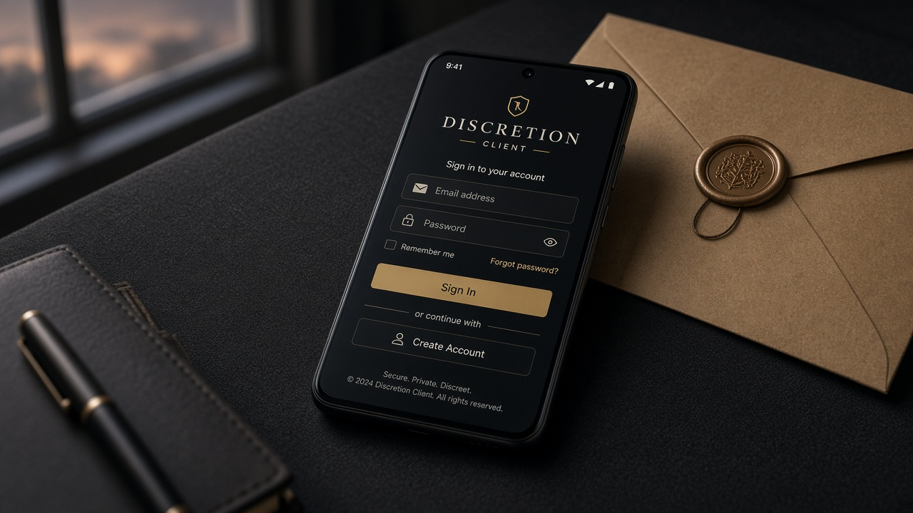
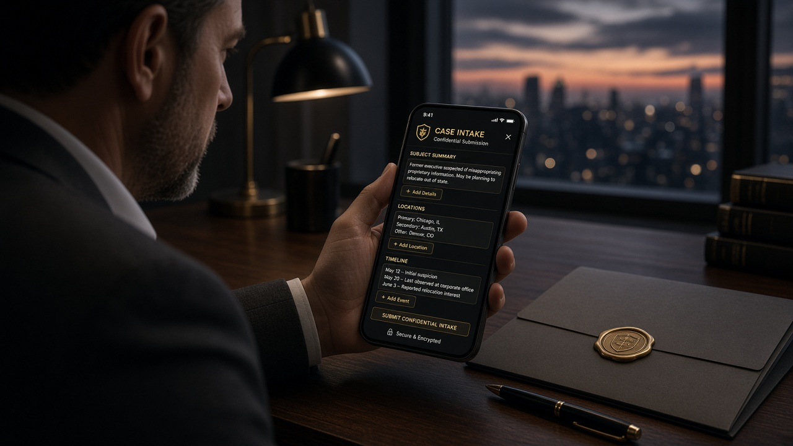
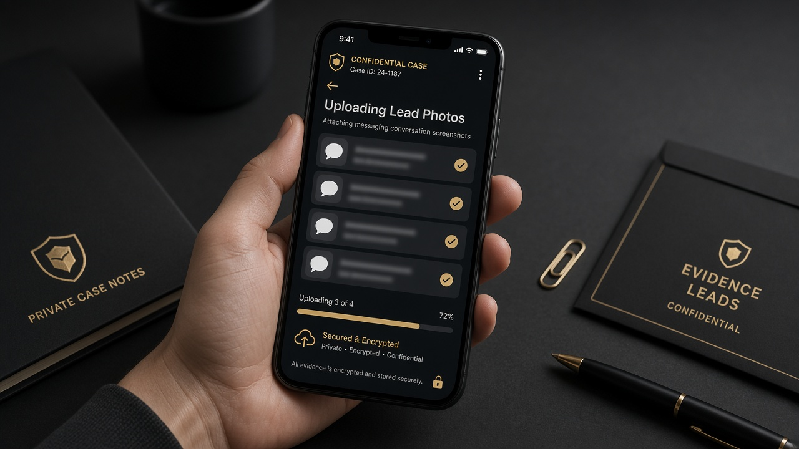
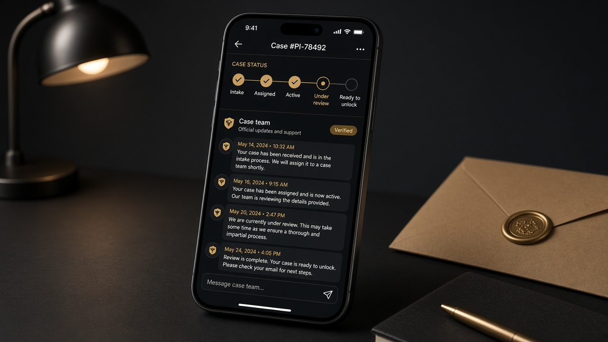
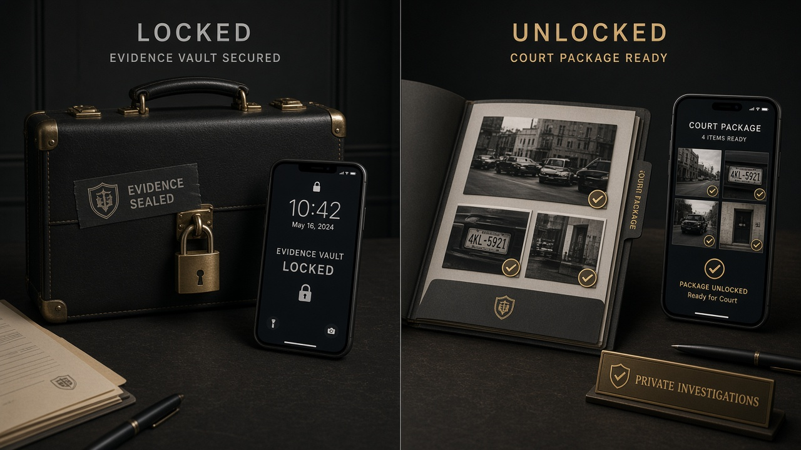

Client app
Client guide
How to open Discretion Client, submit your case, send leads to ops, follow Case team updates, and view approved evidence after unlock.
Adults only. Discretion handles adult consensual-relationship and infidelity matters only. We do not investigate minors or predators. You never see investigator identity — only “Case team.”
1. Sign up & open Client
Discretion Client is the client Android flavor — not the Field app.
-
Open the monorepo
android/folder in Android Studio. - Select build variant clientDebug (Discretion Client).
-
Run on a device/emulator, or install the APK from
android/app/build/outputs/apk/client/debug/. - Create an account with email/password. Sign-up sets your role to client from the app flavor.
-
CLI (set JDK first):
$env:JAVA_HOME = "C:\Program Files\Android\Android Studio\jbr" cd c:\Users\Administrator\AndroidStudioProjects\private-investigator\android .\gradlew.bat assembleClientDebug

2. Submit intake / open a case
Start with a confidential brief: subject context, locations, and timeline. Ops reviews intake before assignment.
- Confirm the matter involves adults only.
- Be factual: who, where, when — avoid speculation.
- Status begins at intake, then moves through assigned → active → under_review → ready_to_unlock → unlocked as ops and field work progress.
- Website intake requests are a first contact; full case work continues in the Client app after your account is provisioned.

3. Upload leads to admin
Send photos and notes that help ops (messaging screenshots, location hints, timelines). Leads go to admin first — they are sanitized before any field release.
- Upload clear screenshots and photos from your gallery.
- Add short factual captions: date, place, why it matters.
- Do not confront the subject or tip them off while collecting leads.
- Investigator identity stays hidden; you will not see who works the case.

4. Status updates & Case team chat
Follow your case timeline and message Case team — brand/support/admin chat, never investigator legal names.
- Timeline: intake → assigned → active → under_review → ready_to_unlock → unlocked.
- During active / undercover work, updates stay high-level by design.
- Ask Case team questions in-app; do not expect real-time field narration.
- You will never see investigator identity in chat or status.

5. Evidence vault — locked until unlock
Approved field evidence stays in a locked vault until admin sets the case to unlocked after ready_to_unlock. Unlock is manual (ops) — this guide does not cover online payment.
- While locked: you see status and Case team updates, not media.
- Admin approves captures before they can appear in your package.
- After unlocked: view the approved Court Package / evidence the team released for you.
- Clients cannot unlock a case themselves.

6. What to look out for
- Privacy — keep case talk private; do not post about an active investigation.
- Do not confront the subject, third parties, or anyone you believe is involved.
- High-level updates during undercover — limited detail while status is active / under_review is normal.
- Evidence only after unlock — vault media appears when admin sets unlocked, not sooner.
- Adults only — Discretion does not take minor or predator matters.
- Identity hidden — if someone claims to be “your investigator,” contact Case team through the app.
Field team?
Investigators use Discretion Field — a separate app and guide. Clients never share that surface.